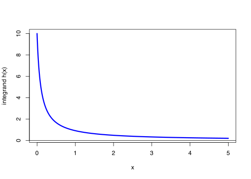

n <- 1e6
samples <- runif(n, -1, 2)
mean(samples^4)[1] 2.199236\[ \newcommand{\Exg}{\operatorname{\mathbb{E}}} \newcommand{\Ex}{\mathbb{E}} \newcommand{\Ind}{\mathbb{I}} \newcommand{\Var}{\operatorname{Var}} \newcommand{\Cov}{\operatorname{Cov}} \newcommand{\Corr}{\operatorname{Corr}} \newcommand{\ee}{\mathrm{e}} \]
Full solutions are now available.
This is Problem Sheet 1, which covers material from Lectures 1 to 6. You should work through all the questions on this problem sheet in advance of the problems class, which takes place in the lecture of Thursday 16 October.
This problem sheet is to help you practice material from the module and to help you check your learning. It is not for formal assessment and does not count towards your module mark.
However, if, optionally, you would like some brief informal feedback on Questions 4, 6 and 8 (marked ★), I am happy to provide some. If you want some brief feedback, you should submit your work electronically through Gradescope via the module’s Minerva page by 1400 on Tuesday 14 October. (If you hand-write solutions on paper, the easiest way to scan-and-submit that work is using the Gradescope app on your phone.) I will return some brief comments on your those two questions by the problems class on Thursday 16 October. Because this informal feedback, and not part of the official assessment, I cannot accept late work for any reason – but I am always happy to discuss any of your work on any question in my office hours.
Many of these questions will require use of the R programming language (for example, by using the program RStudio).
Full solutions will be released on Friday 17 October.
\[ \]
1. Let \(X\) be uniform on \([-1,2]\).
(a) By hand, calculate the exact value of \(\Ex X^4\).
Solution.
\[\int_{-1}^2 x^4\,\frac{1}{2-(-1)}\,\mathrm{d}x = \tfrac13 \Big[\tfrac15x^5\Big]_{-1}^2 = \tfrac13\Big(\tfrac{32}{5}-\big(-\tfrac15\big)\Big) = \tfrac{33}{15} = \tfrac{11}{5} = 2.2\]
(b) Using R, calculate a Monte Carlo estimate for \(\Ex X^4\).
Solution. I used the R code
n <- 1e6
samples <- runif(n, -1, 2)
mean(samples^4)[1] 2.1992362. Let \(X\) and \(Y\) both be standard normal distributions. Compute a Monte Carlo estimate of \(\Exg \max\{X,Y\}\). (You may wish to investigate R’s pmax() function.)
Solution. By looking at ?pmax (or maybe searching on Google) I discovered that pmax() gives the “parallel maxima” of two (or more vectors). That is the first element is the maximum of all the first elements of the vectors; the second element is the maximum of all the second elements of the vectors; and so on.
So I used the R code
n <- 1e6
xsamples <- rnorm(n)
ysamples <- rnorm(n)
mean(pmax(xsamples, ysamples))[1] 0.56451733. You are trapped alone on an island. All you have with you is a tin can (radius \(r\)) and a cardboard box (side lengths \(2r \times 2r\)) that it fits snugly inside. You put the can inside the box [left picture].
When it starts raining, each raindrop that falls in the cardboard box might fall into the tin can [middle picture], or might fall into the corners of the box outside the can [right picture].
(a) Using R, simulate rainfall into the box. You may take units such that \(r = 1\). Estimate the probability \(\theta\) that a uniformly-random raindrop that falls in the cardboard box falls into the tin can also.
Solution. I set things up so that the box is \([-1, 1]^2\), centered at the origin. This means that the inside of the can is the set of points is those \((x,y)\) such that \(x^2 + y^2 \leq 1\).
n <- 1e6
rain_x <- runif(n, -1, 1)
rain_y <- runif(n, -1, 1)
in_box <- function(x, y) x^2 + y^2 <= 1
mean(in_box(rain_x, rain_y))[1] 0.785022(b) Calculate exactly the probability \(\theta\).
Solution. The area of the box is \(2r \times 2r = 4r^2\). The area of the can is \(\pi r^2\). So the probability a raindrop landing in the box lands in the can is \[ \frac{\text{area of can}}{\text{area of box}} = \frac{\pi r^2}{4r^2} = \frac{\pi}{4} \approx 0.785. \]
(c) You realise that, despite being trapped all alone on the island, you now have a way of approximating the value of \(\pi\). If you want to calculate \(\pi\) to 6 decimal places, roughly how many raindrops do you need to fall into the box?
Solution. The phrase “to 6 decimal places” isn’t a precise mathematical one. I’m going to interpret this as getting the root-mean-square error below \(10^{-6}\). If you interpret it slightly differently that’s fine – for example, getting the width of a 95% confidence interval below \(10^{-6}\) could be another, slightly stricter, criterion.
One could work this out by hand. Since the variance of a Bernoulli random variable is \(p(1-p)\), the mean-square error of our estimator is \[ \frac{\frac{\pi}{4}(1 - \frac{\pi}{4})}{n} \approx \frac{0.169}{n} . \] So we need \[n = \frac{0.169}{(10^{-6})^2} \approx 169 \text{ billion} . \]
That said, if we are trapped on our desert island, maybe we don’t know what \(\frac{\pi}{4}(1 - \frac{\pi}{4})\) is. In that case we could do this using the can and the box. Our estimate of the variance is
var_est <- var(in_box(rain_x, rain_y))
var_est / (1e-6)^2[1] 168762628281We will probably spend a long time waiting for that much rain!
4. ★ (2024–25 exam, Question 1(d)) A statistician wants to estimate \(\mathbb E(\cos X)\), where \(X \sim \operatorname{Exp(4)}\) is an exponential distribution with rate 4. The statistician begins with a pilot study, as shown in the R session below:
> n <- 1e4
> samples <- rexp(n, 4)
> var(cos(samples))
[1] 0.01416The statistician wants to get the root-mean-square error of her estimator down to \(10^{−4}\). Approximately how many samples will she need for the full study? Explain your answer.
5. Let \(h(x) = 1/(x + 0.1)\). We wish to estimate \(\int_0^5 h(x) \, \mathrm{d}x\) using a Monte Carlo method.
(a) Estimate the integral using \(X\) uniform on \([0,5]\).
Solution.
n <- 1e6
integrand <- function(x) 1 / (x + 0.1)
samples1 <- runif(n, 0, 5)
mean(5 * integrand(samples1))[1] 3.928643(In fact, the true answer is \(\log(5.1) - \log(0.1) = 3.932\), so it looks like this is working correctly.)
(b) Can you come up with a choice of \(X\) that improves on the estimate from (a)?
Solution. Let’s look at a graph of the integrand \(h\).
curve(
integrand, n = 1001, from = 0, to = 5,
col = "blue", lwd = 3,
xlab = "x", ylab = "integrand h(x)", xlim = c(0,5)
)
abline(h = 0)
We see that we get a much bigger contribution to the integral from values near 0. So a random variable that picks values nearer to 0 more often might have a chance of giving a more accurate result.
I decided to try an exponential distribution with rate 1, which should sample the smaller values of \(x\) more often.
pdf <- function(x) dexp(x, 1)
phi <- function(x) (integrand(x) / pdf(x)) * (x <= 5)
samples2 <- rexp(n, 1)
mean(phi(samples2))[1] 3.932641(I had to include x <= 5 in the expression for \(\phi\), because my exponential distribution will sometimes take samples above 5, but they should count as 0 in an estimate for the integral between 0 and 5.)
To see whether or not this was an improvement, I estimated the mean-square error.
var(5 * integrand(samples1)) / n[1] 3.341696e-05var(phi(samples2)) / n[1] 6.064075e-06I found that I had reduced the mean-square error by roughly a factor of 5.
6. ★ Show that the indicator functions \(\mathbb I_A(X)\) and \(\mathbb I_B(X)\) have correlation 0 if and only if the events \(\{X \in A\}\) and \(\{X \in B\}\) are independent.
Solution. Recall that two random variables \(U\), \(V\) have correlation 0 if and only if their covariance \(\Cov(U,V) = \Ex UV - (\Ex U)(\Ex V)\) is 0 too.
We know that \(\Exg\Ind_A(X) = \mathbb P(X \in A)\) and \(\Exg \Ind_B(Y) = \mathbb P(X \in B)\). What about \(\Exg \Ind_A(X) \Ind_B(X)\)? Well, \(\Ind_A(x) \Ind_B(x)\) is 1 if and only if both indicator functions equal 1, which is if and only if both \(x \in A\) and \(x \in B\). So \(\Exg \Ind_A(X) \Ind_B(X) = \mathbb P(X \in A \text{ and } X \in B)\).
So the covariance is \[ \Cov \big(\Ind_A(X), \Ind_B(X) \big) = \mathbb P(X \in A \text{ and } X \in B) - \mathbb P(X \in A)\, \mathbb P(X \in B) . \] If this is 0, then \(\mathbb P(X \in A \text{ and } X \in B) = \mathbb P(X \in A)\, \mathbb P(X \in B)\), which is precisely the definition of those two events being independent.
7. Let \(X\) be an exponential distribution with rate 1.
(a) Estimate \(\mathbb EX^{2.1}\) using the standard Monte Carlo method.
n <- 1e6
samples <- rexp(n, 1)
mean(samples^2.1)[1] 2.19966(b) Estimate \(\mathbb EX^{2.1}\) using \(X^2\) as a control variate. (You may recall that if \(Y\) is exponential with rate \(\lambda\) then \(\mathbb EY^2 = 2/\lambda^2\).)
Solution. We have \(\Ex X^2 = 2\). So, re-using the same sample as before (you don’t have to do this – you could take new samples), our R code is as follows.
mean(samples^2.1 - samples^2) + 2[1] 2.198221(c) Which method is better?
Solution. The better answer is the one with the smaller mean-square error.
For the basic method,
var(samples^2.1) / n[1] 2.807748e-05For the control variate method,
var(samples^2.1 - samples^2) / n[1] 6.881275e-07So the control variates method is much, much better.
8. ★ Let \(Z\) be a standard normal distribution. A statistician has been investigating Monte Carlo estimates of \(\mathbb EZ^k\) for different positive integers values of \(k\). Her colleague suggests using \(Z' = -Z\) as an antithetic variable. Without running any R code, explain whether or not this is a good idea (a) when \(k\) is even; (b) when \(k\) is odd.
Solution.
(a) When \(k\) is even, we have \(Z^k = (-Z)^k\). So the antithetic variables method just repeats each sample twice. This is obviously no benefit at all, and just wastes time. Indeed, we have perfect positive correlation \(\rho = +1\), which is the “worst-case scenario”.
(b) When \(k\) is odd, we have \(Z^k = -(-Z)^k\). In this case we know that \(\Ex Z^k = 0\), because the results for positive \(z\) exactly balance out those for negative \(z\), so no Monte Carlo sampling is necessary. If our statistician has somehow forgotten that, though, she will get a pleasant surprise! After just two samples, she will get the estimate \[\frac{1}{2} \big(Z_1^k + (-Z_1)^k \big) = \frac{1}{2} (Z_1^k - Z_1^k) = 0 ,\] Thereby getting the result exactly right. Indeed, we have perfect negative correlation \(\rho = -1\), which is the “best-case scenario”.